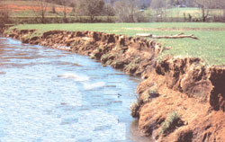
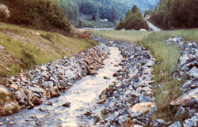
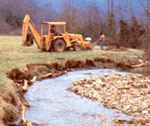
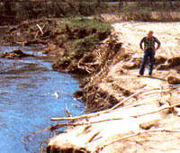
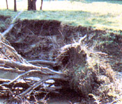
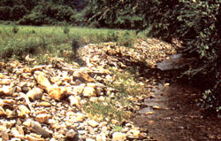
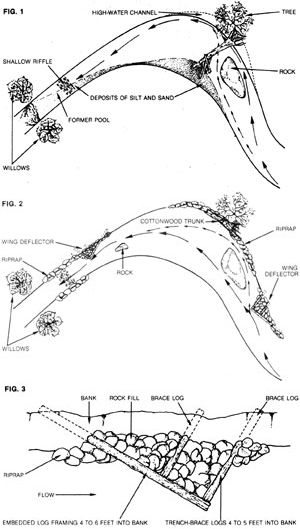

Last issue we told you how to combat erosion on your land. This sequel shows how you can . . .
Photos Courtesy of the US Soil Conservation Service and the Wisconsin Department of Natural Resources
A "well-behaved" brook can produce energy; water for crops, livestock, or and fish for food and re- creation. people; creation. A degraded one, on the other hand, detracts from the appearance of its surround ings and-during and just after a flood-can endanger life and property, as well as ab sconding with chunks of irreplaceable soil.
Floods and massive soil erosion naturally bring to mind another virtue of a wellmannered stream: its ability to carry excess water off the land in an orderly fashion. A stream, however, isn't the only thing that can perform that function. There's that human invention known as a ditch. Far too often, when a stream fails to dispose of its load of water efficiently, we tend to think of it as a malfunctioning ditch. We even discipline rowdy streams into monotonous canals through the process called channelization: straightening and deepening the streambed and removing all obstructions to flow.
This often "works" in controlling the flooding and erosion-if you don't care about fish, wildlife, aesthetics, or recreation, and if you can justify dumping your problem on people downstream.
You can stop streams from flooding or changing course over the years without resorting to heroic engineering feats. You can also prevent changes in course and water level from occurring so abruptly that the carrying capacity of the land-for everything from wildlife to agriculture to housing-is reduced with each rain.
Whatever the size of your stream-and the scale of your project-the same basic principle applies. The main thing is to understand the interactions between the flowing water and the solid objects it confronts. And so (assuming that your house isn't in danger of washing away after the next rain), the first rule to consider is look before you touch.
Begin by reminding yourself that water flows downhill. Whatever problems are created upstream from you are passed on to you in the forms of turbidity, siltation, flooding, and irregular flow rates. Your job is to mitigate these effects as the water flows through your land, thus passing a better stream on to your neighbors downhill.
Start off by walking your brook in a downstream direction. Do it during low, clear water, when details of the streambed will be most apparent. Then do it again during high water, when you can best observe the erosive force of water in action. Do it all kinds of inbetween times. Walk in the stream when you can, and on the bank when you can't.
In your walking or wading, you'll note that erosion isn't a constant force over the whole stream. Some points are badly damaged whenever the water rises, while others remain relatively stable. Your task is to ask why. Why does the water cut the bank here and not there? Why is the channel deep at one place and silted in at another? What changes have occurred, or might occur, in the stream's direction? What influence exerted on these processes would encourage stream stability and minimize damage to the land and waterway?
All stream erosion problems begin on the land. There are two main problem categories: excessive erosion of the bank, and sedimentation of the streambed. (Fig. 1 maps a stretch of stream containing sites with such problems.)
For the purpose of illustration, let's suppose that you have located one case of each kind of problem. At one point, your stream is destroying its bank. Pieces of turf hang out over the water, supported only by a few inches of soil, which periodically break off. Meanwhile, the stream-even at low-flow levelsis cutting away at the lower part of the bank. It has already undercut one mature cottonwood tree, which hangs precariously half in and half out of the water, and another tree is threatened.
This eroding bank is not only unsightly, but also dangerous to people or livestock who stray too near the edge. Furthermore, the stream is steadily eating away your land and depositing your good soil as harmful silt at downstream sites.
First the stream damages the bank. Then the bank damages the stream. Farther down from your collapsing bank is one of the first stops for your lost soil, as well as for other sediments originating above your property. Just upstream of a large clump of willows is a shallow, mud-bottomed reach that is neither attractive nor productive of fish. It used to be a gravel-bottomed riffle and a deeper pool. You can tell that by wading through there, because your feet encounter gravel under a thin layer of silt in the upper part of the reach. Then, although the water doesn't appear much deeper, you sink up to your knees in soft sediment.
There are two ways to attack both of these problems: in the stream, by redirecting the force of the water, and on the bank, by stabilizing the soil. Channelization, in its ultimate form, accomplishes both of these ends, albeit at the cost of all the stream's natural values. The channel is dredged perfectly straight, so that the force of the water against the bank is minimized, and the banks are converted to rock or even concrete walls, which resist erosive forces. However, we're looking for a more "natural" way of accomplishing these same ends.
Let's begin with the eroding bank. Why has nature decided to "pick on" this particular point instead of so many others? First, note that the problem spot is located on the outside of a bend, where the force of the current is strongest. Still, not every bend is as eroded as this one. Now take a look at the large, barely submerged outcropping of rock just upstream. A rule of thumb in stream engineering is that water spills off a solid object at an angle to the last surface it touches, and that's just what has happened here. The rock pushes the main force of the current (the thalweg, in fishery biologist jargon) directy into the bank, rather than parallel to it.
The downed tree is part of the problem, too. Cottonwoods like to grow along watercourses, and in an undisturbed, natural environment, that's fine. But in a degraded environment, cottonwoods may exacerbate bank erosion. These trees are easily undercut, and even when that doesn't happen, old, dying cottonwoods may just fall over, pulling out their own roots.
In our example, the gap left by the roots forms a secondary channel during high water, enabling the stream to cut still farther into the bank. In addition, the trunk of the tree
acts as a partial dam. Some water does spill over the top of it after a heavy rain or snow-melt butat all times-water is also forced wider the frunk, further undercutting the bank. Meanwhile, near the opposite bank, the damming effect of the top portion of the tree pushes still more water from the left bank toward the right.
The first and easiest step toward restoring this problem spot is to get rid of the downed cottonwood. You could, for example, simply cut it up into logs, then float or carry them out. Whatever you do, try to avoid going into the streambed with heavy machinery. (Note: I'm not advocating removal of all deadwood as a general practice. In many instances, downed timber contributes substantially to stream aesthetics and to fish and wildlife habitats. The point is that this particular tree is clearly contributing to the erosion problem.)
Now let's see if we can redirect the thalweg so it doesn't collide abruptly with the bank. Removing the rock outcropping is out of the question; besides, it's attractive and a good fishing spot. One solution is to set up a counterforce, and the easiest way to do that is to place large rocks along the eroding bank-a technique known as riprap. The obvious purpose of riprap is to help the shoreline resist the force of the water, but it also creates turbulence-and turbulence tends to throw the current back toward the center of the stream, further reducing bank erosion and deepening the center so that it can accommodate more water.
Placing riprap, however, is not just a matter of flinging rocks. First of all, the stones must be the correct size and shape for the dimensions and flow rate of the stream. If the rocks are too small, they may be moved be a flood. If they are too large, the bank may erode behind them. As for shape, flat-edged rocks are easier to place and will deflect water better than rounded ones. A shovel may be handy for securely placing the first layer of rock. From then on, the process is not unlike building a stone wall. (A layer of gravel under the riprap provides added protection for the bank.)
Riprap can redirect flow, but it doesn't appreciably slow the water. Furthermore, while well-placed riprap is scarcely noticeable on some sites, on others it can look as out of place as a concrete wall.
The preferable, but more complicated, alternative is to build some sort of in-stream structure. The most adaptable of these is known as a wing deflector. (Fig. 2 shows how a wing deflector might be sited in the situation we are discussing, and Fig. 3 shows how it's constructed.) The space behind the leading edge should always be filled. Otherwise, floodwaters passing over the top will create a new erosion site.
Now, let's look at the silted downstream site. We've already helped it a little by dealing with the upstream problem. At least there will be that much less soil entering the stream which could be deposited there. But we want to get rid of most of the present silt layer, restoring the riffle area (which is the most important type of feeding and spawning habitat for many kinds of fish), and deepening the pool.
The only real in-stream problem here is caused by the willows. These trees, with their tenacious root systems, are great bank stabilizers, but they aren't so desirable when they get out into the stream. Here two willows, which face each other on opposite sides of a narrow spot, have formed a partial dam with their roots and branches, and that blockage is worsened by floating debris which collects there. We don't want to eradicate the willows, but we can prune them periodically and try to control their progeny.
To accelerate the process of desiltation, we can make further use of riprap or wing deflectors to concentrate the current and flush the silt downstream. In this instance, we may be able to save labor and cost by substituting large rocks, strategically placed, for the deflectors. If this is done, the rocks should be placed toward the middle of the stream so as not to push the current into the bank. The ideal is fast current in the middle and slow water along the banks.
For the purposes of erosion control, a stream bank above the waterline can be looked at as a piece of steep agricultural land. As on "dry" land, the most versatile tool for erosion control is vegetation. But there are a few other tactics that may be appropriate (such as the use of riprap).
However, perhaps the most important erosion-control tool on many stream banks is the barbed-wire fence. Livestock in general, and cattle in particular, are virtual bankwrecking machines. They break down vertical banks, loosen soft soil, make paths that become gulleys, trample and overgraze protective vegetation, and stir up streambottom sediments. If at all possible, livestock should be completely fenced out of streams and off their immediate banks. If no other provision can be made for watering, or if the animals must cross the waterway, give them limited access, only at a gently sloping, erosionresistant site.
Human beings need "fencing," too. Try to limit your own access to a few carefully selected points. And, if necessary, construct steps to avoid beating a path into a steep bank.
The proper planting of stream banks involves matching the vegetation to the habitat. As a general rule, the wider the stream, the taller the vegetation can be. A bank totally lined with large, mature trees may be quite appropriate on large rivers, while tiny brooks may do better with nothing more than a good grass cover. (I'm speaking solely in terms of flood and erosion control. Choosing a strategy becomes much more complex when one considers the water temperature requirements of fish, the potential for loss of water by evaporation and transpiration, the value of the bank as a wildlife habitat, the available fishfood supply, the nutrient contribution made by fallen tree leaves, and the demands of personal aesthetics. In most cases, some combination of trees and low-growing vegetation will be called for.)
Even where the use of trees is strongly indicated, the first step may be to establish a good ground cover. The procedures for doing so are no different from those employed in ordinary agriculture. (But do be cautious with fertilizers; there's no point in trading erosion for pollution.) Among the many grasses appropriate for stream-bank planting, my personal favorite is reed canary grass, which holds soil well, tolerates occasional flooding, provides food for wildlife, and looks beautiful. Its only real drawback is that when grown alongside very small streams, it may extend out into the water. Narrow waterways may thus be temporarily choked in late summer.
Near-vertical banks are among the toughest spots on which to establish vegetative cover. For this and other specialized problems, consult your local Soil Conservation Service office. The experts there may be able to recommend specific seed mixtures suitable to your site and to local conditions.
In general, there is no tree like the willow for holding a stream bank together. A wellestablished willow will break in half before it'll let go. And even a dead willow stump may provide effective erosion control for many years. Given these traits and the ease with which they can be planted, there's no reason not to' plant willows along large streams. However, on small streams, willows may offset the good they do on the bank with the damage they do in the water. Don't plant such trees along little brooks unless you're prepared to prune the branches periodically.
What applies to willows applies, in a lesser degree, to alders, also commonly found along streams. And, as we have seen, cottonwoods have their own disadvantages. Ashes, maples, walnuts, and sycamores are among the trees that prosper on streamside sites, resist uprooting, and don't grow into the water. You can work out your own treeplanting scheme by consulting with tree experts, or by walking or boating a forested stream in your area and noting the trees that behave as you would like.
In addition to planting trees along the stream, it's also a good idea to have a line of trees or shrubs directly behind the high point of the bank. During floods, they'll slow the receding waters, causing silt to drop out on the bank. This vegetation will keep silt from the stream, where it's a problem, and trap it where it'll enrich your agricultural land.
Someone once suggested that naturalstream management-of which erosion control is a major part-is to waterway engineering as orthodontics is to oral surgery. And both of the former work best if you push a little and wait a lot.
The satisfaction is not just in pushing for results, though they come eventually. It's also in waiting, watching, and encouraging Mother Earth's self-healing processes-and knowing that you can never learn it all.
|
 |
 |
 |
|
 |
 |
 |
|
 |
|
|